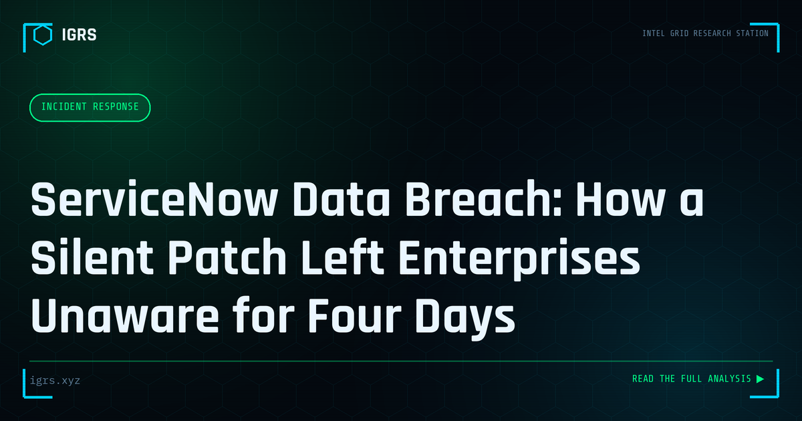

ServiceNow Data Breach: How a Silent Patch Left Enterprises Unaware for Four Days
| File No. | IGRS-065/2026 |
| Subject | Analysis of the ServiceNow unauthenticated API breach, its disclosure timeline, and enterprise response guidance |
| Category | Incident Response |
| Author | Manuj Kumar Pandey |
| Published | 2026-06-12 |
| Reading time | 12 minutes |
ServiceNow disclosed a security incident in which attackers used an unauthenticated API endpoint to query customer instance data. The four-day gap between patch and public disclosure raises serious questions about enterprise breach notification obligations.
Enterprise Platform Breach: An Analytical Brief
When a widely used enterprise platform suffers a security incident, the impact ripples across every organisation that depends on it. The handling of such incidents — including how and when patches are released and disclosed — has significant implications for the many businesses relying on the platform. This analytical brief examines the lessons from enterprise platform breaches relevant to Indian organisations and security teams.
Why Enterprise Platforms Are High-Value Targets
Enterprise platforms — for IT service management, workflow, and business operations — hold sensitive data and sit at the centre of organisational processes. A vulnerability or breach in such a platform can expose data across all its customers and provide attackers a path into many organisations at once. This concentration of risk makes enterprise platforms attractive targets and makes their security incidents consequential far beyond a single organisation.
The Silent Patch Question
| Approach | Implication |
|---|---|
| Silent patching | Fix without full disclosure |
| Coordinated disclosure | Patch with timed public advisory |
| Full transparency | Immediate detailed disclosure |
How a vendor handles a vulnerability — whether patched quietly or disclosed openly — affects how well customers can protect themselves. Silent patching may reduce immediate exploitation by withholding details, but it can also leave customers unaware of the urgency to update.
The Customer's Dilemma
When a platform vendor patches a vulnerability without full disclosure, customers face a dilemma: they may not understand the severity or urgency, may not know whether they were affected, and may not be able to investigate potential compromise effectively. This is why disclosure practices matter — customers depend on clear information to assess their exposure, prioritise patching, and investigate whether they have been breached. Inadequate disclosure leaves defenders operating with incomplete information.
Assessing Your Exposure
When an enterprise platform incident emerges, customers should assess their exposure: confirm whether they use the affected platform and version, apply available patches promptly, review the vendor's advisories and any indicators provided, and monitor for signs of compromise. Where the platform holds personal data, organisations must also consider DPDP Act implications. Treating vendor security incidents as potential exposures requiring active assessment — rather than assuming the vendor has handled everything — is prudent.
Investigating Potential Compromise
If compromise is possible, investigation examines the platform's logs and the organisation's data for signs of unauthorised access or exfiltration. Because enterprise platforms often hold or connect to sensitive data, a confirmed breach engages DPDP Act 2026 notification obligations and requires proper evidence handling under Section 63 BSA. The investigation must establish whether the organisation's data was affected, which determines both response and compliance obligations.
The Supply Chain Dimension
Enterprise platform incidents are fundamentally a supply chain security issue — the organisation's security depends on a third party. This underscores the importance of vendor risk management: assessing platform vendors' security, monitoring their advisories, limiting the data and access they hold where possible, and having a plan for vendor security incidents. Organisations cannot outsource accountability for their data, even when it resides in a vendor's platform.
Lessons for Indian Organisations
For Indian organisations relying on enterprise platforms, these incidents reinforce key lessons: maintain awareness of vendor security and disclosure practices, apply patches promptly, assess exposure actively rather than passively, investigate potential compromise thoroughly, and manage vendor risk as part of overall security. As organisations depend ever more on shared enterprise platforms, the security of those platforms becomes integral to their own — making vendor risk management, prompt patching, and the ability to assess and investigate third-party incidents essential capabilities in a landscape where a single platform vulnerability can affect thousands of organisations simultaneously.